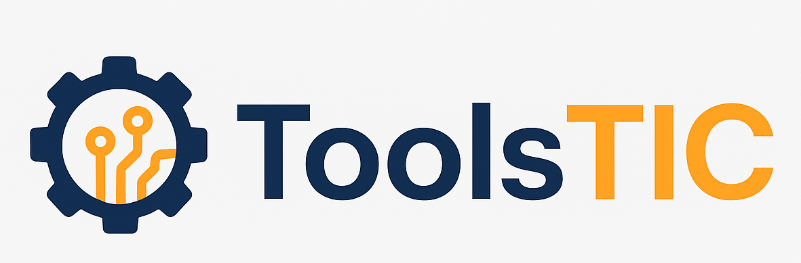

<body class="min-h-screen flex flex-col bg-gray-50">

  <!-- HEADER -->
  <header
    class="fixed top-0 z-50 w-full bg-gradient-to-r from-slate-800 to-indigo-600 shadow flex items-center justify-between py-3 px-4 sm:py-3 sm:px-6 md:py-4 md:px-8">
    <!-- Logo -->
    <a href="Home.html" class="flex items-center">
      
    </a>

    <!-- Navegación -->
    <nav class="flex items-center space-x-4 sm:space-x-5 md:space-x-6">
      <a href="Home.html"
        class="text-white text-base sm:text-lg font-medium px-2 py-1 sm:px-3 sm:py-2 rounded-md transition-colors duration-300 hover:text-yellow-300 hover:bg-indigo-700/30">
        Inicio
      </a>
      <a href="QuienesSomos.html"
        class="text-white text-base sm:text-lg font-medium px-2 py-1 sm:px-3 sm:py-2 rounded-md transition-colors duration-300 hover:text-yellow-300 hover:bg-indigo-700/30">
        Quiénes somos
      </a>
    </nav>
  </header>

  <!-- MAIN -->
  <main class="flex-1 pt-28 pb-24 px-4 flex flex-col md:flex-row gap-8 max-w-6xl mx-auto">
    <!-- Aquí va todo tu contenido tal como lo tienes -->
  </main>

  <!-- BOTONES FLOTANTES -->
  <section>
    <a href="https://wa.me/573128425463?text=Hola%20quiero%20más%20información%20sobre%20el%20proyecto%20ToolsTIC!"
      target="_blank"
      class="fixed bottom-4 right-4 bg-green-500 text-white w-12 h-12 sm:w-14 sm:h-14 flex items-center justify-center rounded-full shadow-lg hover:bg-green-600 transition-colors duration-300 z-50">
      <i class="fa-brands fa-whatsapp text-2xl sm:text-3xl"></i>
    </a>
    <a href="https://www.linkedin.com/in/reyesomaryesid" target="_blank"
      class="fixed bottom-4 right-20 bg-blue-600 text-white w-12 h-12 sm:w-14 sm:h-14 flex items-center justify-center rounded-full shadow-lg hover:bg-blue-700 transition-colors duration-300 z-50">
      <i class="fa-brands fa-linkedin text-2xl sm:text-3xl"></i>
    </a>
    <a href="mailto:omaryesidreyes@gmail.com" target="_blank"
      class="fixed bottom-4 right-36 bg-red-600 text-white w-12 h-12 sm:w-14 sm:h-14 flex items-center justify-center rounded-full shadow-lg hover:bg-red-700 transition-colors duration-300 z-50">
      <i class="fa-regular fa-envelope text-2xl sm:text-3xl"></i>
    </a>
  </section>

  <!-- FOOTER -->
  <footer class="bg-gray-800 text-white p-4 text-center mt-auto">
    <div class="text-gray-400 text-[clamp(0.7rem,2vw,1rem)] sm:text-[clamp(0.75rem,2vw,1rem)]">
      © <span id="current-year"></span> ToolsTIC. Todos los derechos reservados.
    </div>
  </footer>

  <script src="https://unpkg.com/aos@2.3.4/dist/aos.js"></script>
  <script>
    AOS.init({ duration: 800, once: true });
    document.getElementById('current-year').textContent = new Date().getFullYear();
  </script>

</body>
